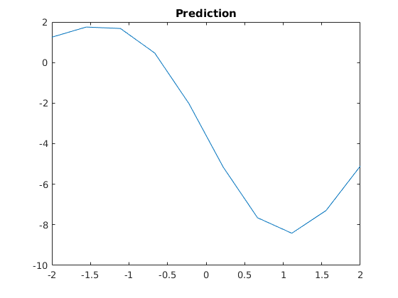
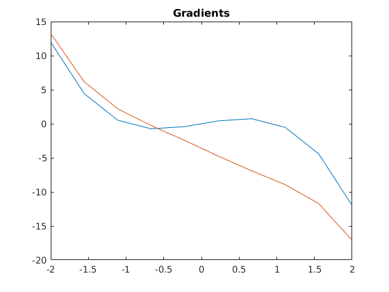

% Cross Entropy Gaussian Process Model Double Well % 1. Sampling of biased trajectories and evaluation of path functional % 2. Build Matrix for solving regularized linear equation % Sampling % a bias can be included here gradV = @(x) 2*x.*(x.^2-1); dt = 0.01; sdt = sqrt(dt); beta = 3; sigma = sqrt(2/beta); nvs = 1; ntrjs = 10; %number of trajectories nsteps = 150; time=zeros(1,ntrjs); X = zeros(ntrjs,nsteps); X(:,1)=-1; % the considers path functional is the moment generating function of the % stopping time pathfunc = zeros(ntrjs,1); Eta= randn(ntrjs,nsteps-1); bias=-3; for i = 1:ntrjs Is=0; Id=0; x = -1; first = 0; for j = 2:nsteps eta=randn(1); x = x - (gradV(x)+bias) * dt + eta * sigma*sdt; X(i,j) = x; Eta(i,j)= eta; Is = Is + bias * eta/ sigma * sdt; Id = Id - bias.^2 / sigma^2 *dt; if x > 0.9 && x < 1.1 && first == 0 %if x > -1.1 && x < -0.9 && first == 0 time(i) = j; pathfunc(i) = exp(-beta*j*dt)*exp(Is+0.5*Id); %weighted path functional X(i,j:end)=x; first = 1; break; end end end
Building the matrix to solve the optimization problem
l=1; k = @(a,b) .5/sqrt(2*pi)*l.^2.*exp(-0.5*(a-b).^2/l.^2); %vector with observed data X = X'; data_obs = X(:); gv=gradV(X); gv=gv(:); K=zeros(length(data_obs),length(data_obs)); for i=1:length(data_obs) for j=1:length(data_obs) K(i,j) = k(data_obs(i),data_obs(j)); end end %weighted vector with observed data data_wei = (1/2*beta)*pathfunc.*X'; data_wei = data_wei(:); sigma_n=0.002; K=K+sigma_n*eye(length(data_obs),length(data_obs)); K_pred = -(K*dt + 2*beta*eye(length(data_obs),length(data_obs))) \ (K*data_wei-K*dt*gv); %plot(K_pred) % control prediction xtest=linspace(-2,2,10); Kd=zeros(length(xtest),length(data_obs)); for i=1:length(xtest) for j=1:length(data_obs) Kd(i,j)= k(xtest(i),data_obs(j)); end end % c_pred = Kd*K_pred; % figure(1) plot(xtest, c_pred); title('Prediction') figure(2) plot(xtest,-gradV(xtest)); hold on plot(xtest, -gradV(xtest)+c_pred') title('Gradients') hold off 